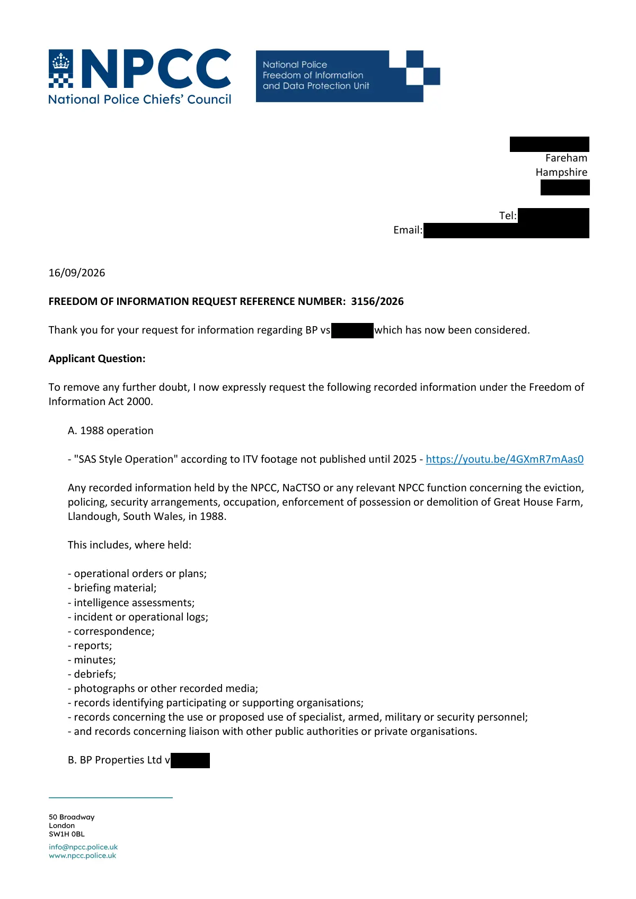

GHF-E106-R70-A1 WhatDoTheyKnow reply
NPCC FOI 3156/2026: no information held

Transcript
[address redacted] Fareham Hampshire [address redacted] Tel: [phone redacted] Email: [email redacted] 16/09/2026 FREEDOM OF INFORMATION REQUEST REFERENCE NUMBER: 3156/2026 Thank you for your request for information regarding BP vs Buckler, which has now been considered. Applicant Question: To remove any further doubt, I now expressly request the following recorded information under the Freedom of Information Act 2000. A. 1988 operation - "SAS Style Operation" in ITV footage not published until 2025 - https://youtu.be/4GXmR7mAas0 Any recorded information held by the NPCC, NaCTSO or any relevant NPCC function concerning the eviction, policing, security arrangements, occupation, enforcement of possession or demolition of Great House Farm, Llandough, South Wales, in 1988. This includes, where held: - operational orders or plans; - briefing material; - intelligence assessments; - incident or operational logs; - correspondence; - reports; - minutes; - debriefs; - photographs or other recorded media; - records identifying participating or supporting organisations;
Read more
- records concerning the use or proposed use of specialist, armed, military or security personnel; - and records concerning liaison with other public authorities or private organisations. B. BP Properties Ltd v Buckler Any recorded information held concerning BP Properties Ltd v Buckler [1987] EWCA Civ 2, insofar as the case, the parties, Great House Farm, or the resulting possession/enforcement operation was considered by NPCC, NaCTSO, ACPO or any predecessor/successor national policing structure. I am particularly interested in any recorded material connecting the judgment with the subsequent 1988 operation. C. Police and security involvement Any recorded information identifying, or describing the involvement of: - South Wales Constabulary; - South Wales Police; - ACPO or any ACPO committee, working group or national policing function; - specialist police units; - military personnel or military units; - private security companies, bailiffs or enforcement agents; - or any other police, security or government body in planning, intelligence, security, support or execution of the 1988 operation. I am not asking the NPCC to confirm that any particular allegation is true. I am asking whether records concerning these matters exist and, where not exempt, to communicate them. D. Predecessor and successor records I recognise that the NPCC did not exist in 1988. The relevant national predecessor organisation was the Association of Chief Police Officers (ACPO), which existed from 1948 until 2015. I therefore request any recorded information held by the NPCC concerning: 1. records inherited, transferred or otherwise acquired from ACPO which refer to the matters above; 2. any ACPO committee, working group, national policing portfolio or other predecessor body which dealt with the relevant matter; 3. any later NPCC or NaCTSO record which refers to, indexes, summarises, preserves, archives or otherwise records the existence of earlier material concerning the 1988 operation. I am not suggesting that NPCC or NaCTSO themselves conducted the 1988 operation. The purpose of this part of the request is to establish the chain of custody and present location of any surviving national policing records. E. Searches and record location If you conclude that no substantive records are held, please confirm whether the appropriate NPCC functions and repositories were searched, including the Counter Terrorism Coordination Committee and any relevant historical/predecessor record holdings. Please also confirm, where possible, whether relevant records were: - transferred to another police force; - deposited with a local or national archive; - transferred from ACPO to another body; - destroyed under a retention/disposal schedule; - or otherwise ceased to be held by NPCC. I am not asking you to create new information or conduct an investigation. I am asking for information that is already recorded, including records showing the transfer, retention or disposal of relevant records. The ICO's records-management guidance recognises the importance of records showing where information was transferred, archived or destroyed, including the applicable disposal arrangements. F. Correct authority / section 16 assistance If the NPCC does not hold the requested information, please say so expressly. However, pursuant to the section 16 duty to provide reasonable advice and assistance, please identify the public authority or archival body which you consider most likely to hold the relevant records. This is particularly important because the historical force structure is identifiable: the police force operating in the relevant area in 1988 was South Wales Constabulary, and South Wales Police's own Heritage Centre states that Glamorgan Archives holds records of South Wales Police and its predecessor forces. If you consider that another public authority holds the information, please tell me which authority and, where practicable, provide the relevant contact point or record repository. NPCC Response: The NPCC does not hold information captured by your request. Normal Standard of proof to apply in determining whether a public authority does hold any requested information is the civil standard of the balance of probabilities. In deciding where the balance lies, the Information Commissioner considers the scope, quality, thoroughness and results of the searches carried out by the public authority as well as considering where appropriate, any other reasons offered by the public authority to explain why the information is not held. The NPCC has undertaken searches across the business areas and repositories considered most likely to hold information within scope, including relevant NPCC functions, CTCC holdings, NPCC shared drives, and ACPO archive listings available to the NPCC. No information within scope has been identified. Searches of ACPO archive listings and catalogues available to the NPCC identified no references to Great House Farm, Llandough, BP Properties Ltd v Buckler, or the 1988 operation described in your request. The NPCC does not hold any information concerning the transfer, archiving, retention, disposal or current location of records relating to the matters specified in your request. The NPCC was established in 2015 and does not have direct access to the holdings of external archives, police force archives or heritage repositories. Consequently, the NPCC is unable to identify a specific alternative holder of the requested information based on information it holds. I have undertaken all the necessary checks in establishing whether information is held which is captured by your request and any necessary steps regarding retrieval of such information. Searches have been conducted with the NPCC portfolio(s) that relates to the subject matter, and I am satisfied that the search conducted to locate the information that you have requested has been robust. There is no information held within the NPCC, and I therefore conclude that the information that you seek is not held by the NPCC. A consideration for you is to make a request with individual police forces. Unfortunately, I do not hold a public facing list of force FOI contact details, however they will be available here. You can send a request to multiple forces by way of one email, with each force having a lawful responsibility under the Act to respond to you. Yours sincerely Freedom of Information Officer & Decision Maker www.npcc.police.uk COMPLAINT RIGHTS Internal Review Any request for an internal review will be acknowledged and responded to, based on the specific wording of your initial request only. We ask that any rationale to request an internal review, does not include any requests for new information and ask that these be submitted by separate email. We will acknowledge as a new request and may aggregate to your initial request in compliance with the legislation. If you are dissatisfied with the response you have been provided with in compliance with the Freedom of Information legislation, you can lodge a complaint with NPCC to have the decision reviewed within 40 working days of the date of this response. The handling of your request will be looked at by someone independent of the original decision and a fresh response provided. It would be helpful, if requesting a review, for you to articulate in detail the reasons you are not satisfied with this reply. If you would like to request a review, please write or send an email to NPCC Freedom of Information, c/o PO Box [address redacted]
Artifact description
Response FOI 3156/2026 (letter attached): no information held; searches found no reference to Great House Farm, Llandough, BP Properties Ltd v Buckler or the 1988 operation; suggests asking individual police forces.
| Catalogue ID | GHF-E106-R70-A1 |
|---|---|
| What it is | PDF document from National Police Chiefs' Council. Attached to an email received on 17 September 2026, their reference 3156/2026. 5 pages. |
| From | National Police Chiefs' Council |
| Email received | 17 September 2026 |
| Their reference | 3156/2026 |
| Pages | 5 |
| File | 3156 2026 NPCC Response Letter BP vs Buckler.pdf (286 KB) |
| State | Read |
Our integration
The National Police Chiefs' Council's response to FOI 3156/2026: no information held. Searches found no reference to Great House Farm, Llandough, BP Properties Ltd v Buckler or the 1988 operation. It suggests asking individual forces.
Related: the internal reviews (GHF-E106-R71-A1) and the later account of the searches made (GHF-E106-R72-A1).
What cuts against the case: the NPCC was formed in 2015 and holds few records from earlier bodies. A 1988 local operation would sit with South Wales Police, if anywhere.
Related: Timeline · Disclosure Dartboard